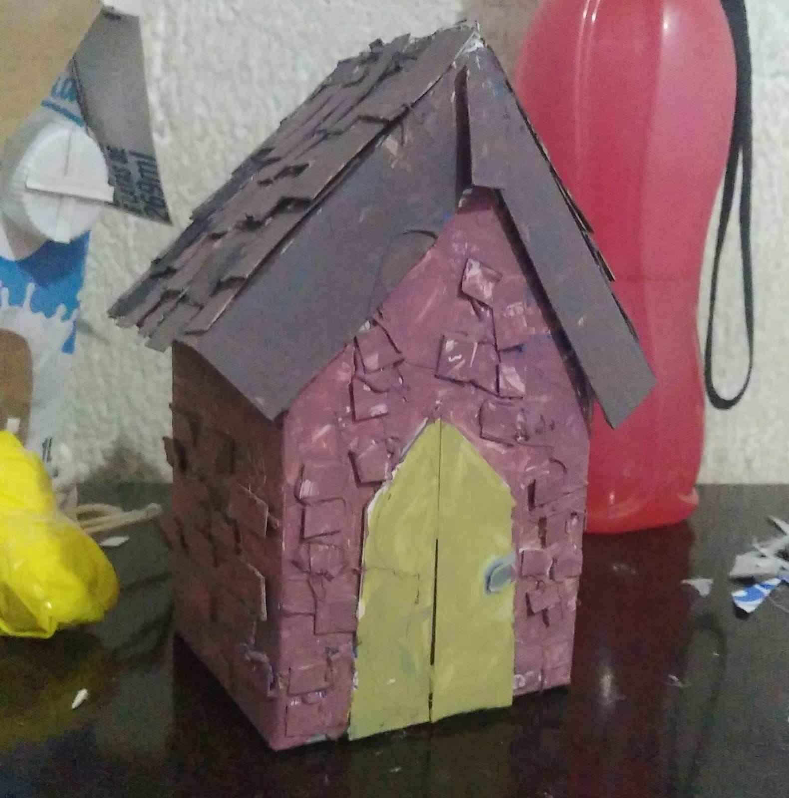

Olá, meu nome é Merlin e isso é o que eu faço
oi, eu sou a merlin
tenho 17 anos e sou estudante de multimídia na etec
gosto do meu gato e de café me interessei pela minha área por que atende a tudo que eu mais gosto de fazer,
áudio visual e arte
espero que meu trabalho possa ajudar você no que precisar, faço isso com coração.
maquiagens
vídeos
artesanato
design

baby...@gmail.com